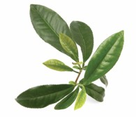

about tea: health
The Health Benefits of Tea
Studies that support the health benefits of tea drinking keep filling the headlines. There's simply no denying that a daily spot of tea does the body good. Even though researchers can't quite agree on every aspect, itis a fact that a few cups a day will do its best to protect you from heart disease, a stroke, cancer, and more.
Tea contains high levels of antioxidants, some of which are called polyphenols, flavonoids, and catechins, and all of which take on the "free radicals" in the body and prevent them from harming the healthy cells on board.
In other words, sending in antioxidants is disease prevention in its finest form. Antioxidants are ready and waiting not only in teas but also in several fruits, vegetables, nuts, meats, and even wines. If that were not enough, tea also contains flouride which benefits your teeth and has bacteria killing properties which helps control bad breath and the formation of plaque.
Tea is the most commonly consumed beverage in the world after water. Whether it is black, green or red (oolong) tea, they all contain polyphenols which give tea its antioxidant properties. Antioxidants may help protect our body from free radical damage. Indeed, tea ranks as high as or higher than many fruits and vegetables in the ORAC score, a score which measures antioxidant potential of plant-based foods.
Numerous studies have demonstrated the anti-cancer properties of polyphenols. Some studies indeed suggested that tea's polyphenols may reduce risk of gastric, esophageal and skin cancers if one consumes 4 to 6 cups daily. Other laboratory studies have found that polyphenols help prevent blood clotting and lower cholesterol levels. A recent study published in December 2005 showed that just 2 cups of tea may lower the risk of ovarian cancer by 46 percent in women.